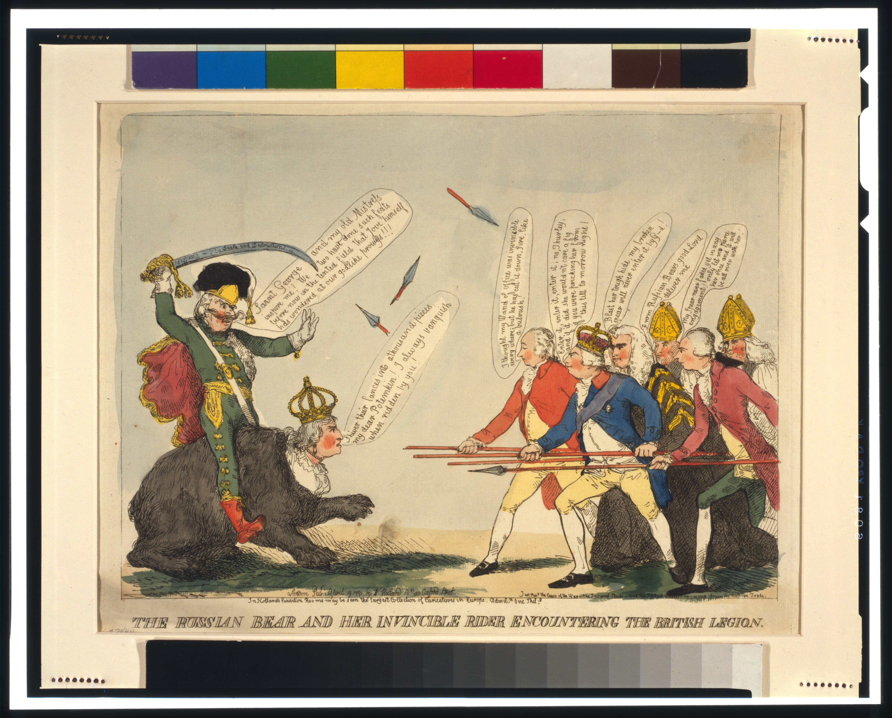

Медведица
Женский пол соединяет образ страны с Екатериной II.

Ты увидел Россию — или чужой страх перед Россией?
Не ищи «правильный» ответ. Зафиксируй реакцию до того, как музей раскроет подпись и обстоятельства публикации.
Нажми на метки. Визуал остаётся отдельным: каждое объяснение появляется в панели рядом, а не закрывает оригинал.
Женский пол соединяет образ страны с Екатериной II.
Потёмкин с саблей превращает силу зверя в управляемое наступление.
Британское сопротивление показано уязвимым ещё до столкновения.
Угроза 1791 года стала защитником в 1812-м, знаком давления в 1882-м и образом страны, отделённой от власти, в 1918-м. Устойчивым оказался силуэт, а не его значение.
Перед нами лондонский лист, опубликованный 19 апреля 1791 года. Екатерина II изображена медведицей, а Григорий Потёмкин — всадником с поднятой саблей. Навстречу им стоят Георг III и британские министры. Художник не составлял этнографический портрет России: он превращал внешнюю политику в мгновенно понятную сцену. Огромное животное занимало почти всё поле, а зритель получал ощущение давления раньше, чем успевал разобраться в именах и обстоятельствах.
Это различие принципиально. Факт — дата, место публикации, техника, опознаваемые персонажи и детали листа. Авторская позиция — выбранный масштаб, направление движения, гротеск и противопоставление одного тела группе людей. Музейная интерпретация — наш способ сравнить первое впечатление с документированной карточкой предмета. Если смешать эти три слоя, карикатура начинает казаться фотографией национального характера. Если разделить — становится виден её настоящий механизм.
Медведь оказался удобным визуальным знаком: его легко сделать неуклюжим или страшным, защитником или пленником. Но устойчивость знака не означает устойчивость смысла. В 1812 году «северный медведь» уже помогает изгнать Наполеона. В итальянском листе 1882 года он становится частью сложной карты европейского давления. В американской карикатуре 1918 года страна-медведь отделена от власти, удерживающей её на поводке. Один и тот же силуэт позволяет редактору каждый раз собирать другую Россию.
Поэтому вопрос страницы звучит не «похожи ли русские на медведя?». Более точный вопрос: кому, когда и зачем понадобилось, чтобы зритель увидел Россию именно так? Карикатура экономит объяснение: несколько фигур, размер, движение и подпись создают готовый вывод. Но внимательный посетитель может пройти обратный путь — остановить автоматическую реакцию, рассмотреть улики, вернуть изображению дату и увидеть интерес того, кто его выпустил.
Так работает визуальная грамотность. Она не запрещает смеяться и не требует оправдывать героя изображения. Она учит отличать наблюдение от внушения. Исторический лист становится не только свидетельством дипломатического конфликта, но и тренировкой для современного зрителя: мем, плакат и газетная картинка используют тот же короткий путь от эмоции к убеждению.
19 апреля 1791 года, Лондон, раскрашенный офорт; Екатерина II, Потёмкин, Георг III и министры.
Масштаб и движение предлагают британскому зрителю ощущение приближающейся силы.
Мы сравниваем реакции и эпохи. Это учебный инструмент, а не подпись автора.
Нажимай годы. Изменяется не животное, а роль, которую ему назначает автор.
Британский лист превращает Екатерину II в огромную наступающую силу. Символ работает как предупреждение.
Исторический оригинал · Library of Congress
Выбери позицию газеты. Макет изменится, а исторический оригинал останется тем же.
После редакторской игры здесь появится твой путь — от автоматической реакции к осознанному чтению.
Итог: 0/100 баллов. Заверши расследование и проверь себя.
Дата — номер музейного выпуска, а не годовщина события. Первый выпуск открыт; остальные темы будут появляться после приёмки эталона.
Все изображения обозначены как исторические оригиналы. Газетная полоса — образовательная реконструкция.
Как народная картинка превращает войну в короткую сцену, которую понимают без длинного текста.
Следующий выпуск готовитсяАвтор не установлен, поэтому музей не выдумывает его голос. Ответы собраны из карточки предмета и исследований.
Дата, место, техника, персонажи и детали.
Масштаб, гротеск и направление движения.
Сравнение реакций и эпох как учебный инструмент.
Лев, орёл, медведь и человеческие типы позволяли объяснить международный конфликт одним взглядом. Русская тема дала этому международному языку один из самых устойчивых образов — но не одно неизменное значение.
Особенно важно вернуть листу аудиторию. Лондонский зритель видел знакомых политиков, узнавал спор своего времени и считывал намёки, которые сегодня требуют пояснения. Без этой рамки остаётся только эффектный зверь. С рамкой перед нами раскрывается редакционная технология: персонажи названы, стороны разведены по полю, движение задано, а смешное и страшное соединены так, чтобы позиция казалась естественной.
Именно поэтому музей не предлагает заменить одну готовую оценку другой. Наша задача — дать посетителю инструменты проверки. Сначала назвать то, что действительно видно; затем спросить, какие решения управляют вниманием; после этого установить автора, издателя, дату и предполагаемого адресата; наконец, сравнить образ с другими эпохами. Такой порядок превращает просмотр в расследование и возвращает зрителю право на собственный, но обоснованный вывод.
Этот навык нужен не только историку. Современная лента новостей по-прежнему сталкивает изображение с короткой подписью и требует мгновенной реакции. Разница лишь в скорости распространения. Если посетитель научился спрашивать, кто выбрал кадр, какой заголовок к нему добавили и чего не показали за границами композиции, музейный опыт продолжает работать после закрытия страницы.